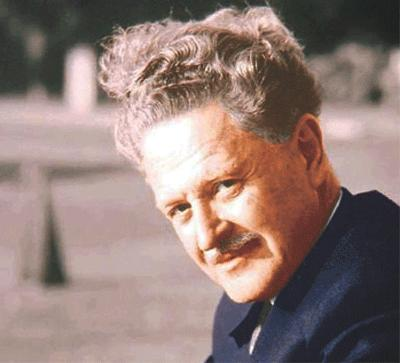
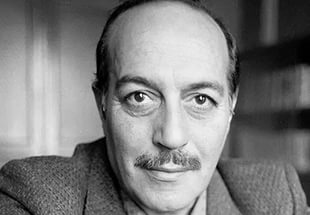

İzlediğim "Ölü Ozanlar Derneği" filminde Tıp, Hukuk, bankacılık.
Bunlar hayatı sürdürmek için gereklidir.
Peki ya şiir , romantizm , aşk , güzellik ?
Bunlar ise uğruna hayatta kaldığımız şeylerdir.
Poem relax me. My favorite poet is Nazım Hikmet.
Nâzım Hikmet Ran
Nâzım Hikmet Ran (15 January 1902 – 3 June 1963) commonly known as Nâzım Hikmet was a Turkish poet, playwright, novelist, screenwriter, director and memoirist. He was acclaimed for the "lyrical flow of his statements". Described as a "romantic communist and "romantic revolutionary", he was repeatedly arrested for his political beliefs and spent much of his adult life in prison or in exile. His poetry has been translated into more than fifty languages.

« "Dörtnala gelip Uzak Asya'dan
Akdeniz'e bir kısrak başı gibi uzanan bu memleket, bizim.
Bilekler kan içinde, dişler kenetli, ayaklar çıplak
Ve ipek bir halıya benzeyen toprak bu cehennem, bu cennet bizim. Kapansın el kapıları, bir daha açılmasın,
Yok edin insanın insana kulluğunu, bu dâvet bizim....
Yaşamak bir ağaç gibi tek ve hür ve bir orman gibi kardeşçesine,
Cemâl Süreya (1931, Pülümür, Tunceli – 09 January 1990, Istanbul), pen name of Cemâlettin Süreyya Seber, Turkish poet and writer.
Of Zaza origin, after the 1938 Dersim Rebellion, Süreya and his family were displaced to Bilecik, a city in the Marmara Region of Turkey. This had a significant effect on his poems.[citation needed]
He graduated from the Political Sciences Faculty of Ankara University. He was the editor-in-chief of the Papirüs literary magazine. Cemal Süreya is a notable member of the Second New Generation of Turkish poetry, an abstract and postmodern movement created as a backlash against the more popular-based Garip movement. Love, mainly through its erotic character, is a popular theme of Süreya's works. Süreya's poems and articles were published in magazines such as Yeditepe, Yazko, Pazar Postası, Yeni Ulus, Oluşum, Türkiye Yazıları, Politika, Aydınlık, and Somut. He is known to have been a primary influence on the poetry of Sunay Akın.
He lost a letter "y" from his pen name – originally Süreyya – because of a lost bet with Turkish poet Sezai Karakoç

ÜVERCİNKA
Böylece bir kere daha boynunlayız sayılı yerlerinden
En uzun boynun bu senin dayanmaya ya da umudukesmemeye
Laleli'den dünyaya doğru giden bir tramvaydayız
Birden nasıl oluyor sen yüreğimi elliyorsun
Ama nasıl oluyor sen yüreğimi eller ellemez
Sevişmek bir kere daha yürürlüğe giriyor
Bütün kara parçalarında
Afrika dahil
Aydınca düşünmeyi iyi biliyorsun eksik olma
Yatakta yatmayı bildiğin kadar
Sayın Tanrıya kalırsa seninle yatmak günah, daha neler
Boşunaymış gibi bunca uzaması saçlarının
Ben böyle canlı saç görmedim ömrümde
Her telinin içinde ayrı bir kalp çarpıyor
Bütün kara parçaları için
Afrika dahil
Senin bir havan var beni asıl saran o
Onunla daha bir değere biniyor soluk almak
Sabahları acıktığı için haklı
Gününü kazanıp kurtardı diye güzel
Birçok çiçek adları gibi güzel
En tanınmış kırmızılarla açan
Bütün kara parçalarında
Afrika dahil
Birlikte mısralar düşünüyoruz ama iyi ama kötü
Boynun diyorum boynunu benim kadar kimse
değerlendiremez
Bir mısra daha söylesek sanki her şey düzelecek
İki adım daha atmıyoruz bizi tutuyorlar
Böylece bizi bir kere daha tutup kurşuna diziyorlar
Zaten bizi her gün sabahtan akşama kadar kurşuna
diziyorlar
Bütün kara parçalarında
Afrika dahil
Burda senin cesaretinden laf açmanın tam da sırası
Kalabalık caddelerde hürlüğün şarkısına katılırkenki
Padişah gibi cesaretti o, alımlı değme kadında yok